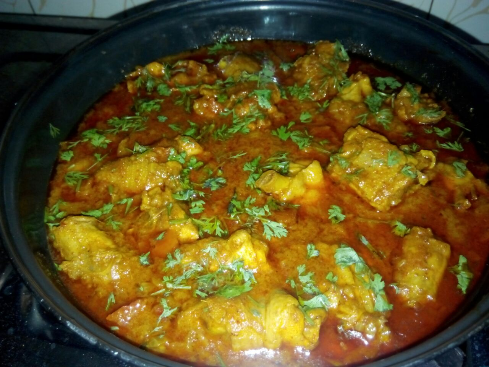

Home
Indian Chicken Curry

Description
This Indian-inspired creamy chicken curry recipe is similar to a curry I had in India. The aromatic spices and flavors are a delight to the senses! Delicious with fresh naan and basmati rice.
Ingredients
- onion
- Garlic
- Curry
- Paprika
- coconut oil
Steps
- Heat olive oil in a skillet over medium heat. Sauté onion until lightly browned.
- Stir in garlic, curry powder, cinnamon, paprika, bay leaf, ginger, sugar, and salt. Continue stirring for 2 minutes.
- Add chicken pieces, tomato paste, yogurt, and coconut milk. Bring to a boil, reduce heat, and simmer for 20 to 25 minutes.
- Remove bay leaf, and stir in lemon juice and cayenne pepper. Simmer 5 more minutes.
- Serve hot and enjoy!